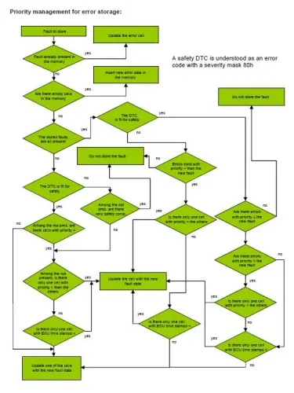

Diagnosis¶
Welcome to one of the most practical topics of the whole bootcamp. Every modern Electronic Control Unit (ECU) runs a continuous self-check while the vehicle drives: it watches its sensors, actuators, power supply lines and even its own microcontroller, and whenever something looks wrong it writes the fault down so that you — with a diagnostic tester, or from a test bench — can read it back later. Diagnosis is the discipline behind all of that: how the self-check is specified, how faults become Diagnostic Trouble Codes (DTCs) in the ECU's error memory, and how you talk to the ECU over CAN to read parameters, clear faults, run actuator tests and flash new software. After this lesson you will be able to explain how a fault travels from "sensor reads oddly" to a stored DTC, and which Unified Diagnostic Services (UDS) requests a tester sends to do each workshop operation.
Don't worry about memorizing every service ID on first read — focus on the mental models (fault lifecycle, error memory, request/response protocol). The tables will still be here when you need them at the bench.
How a diagnostic conversation works¶
Diagnostic communication has a reassuringly simple shape:
- the channel is the CAN bus (see CAN & LIN); the diagnostic socket is the physical access point,
- the diagnostic tool is just one more node on the network: it sends a request to an ECU, and that ECU answers — nothing magical happens in between,
- the translation from raw bytes to engineering values is done by the tool, driven by the ECU's diagnostic description (the CDD file, produced with the CANdela authoring tool). The CDD is to diagnosis what the DBC is to CAN traffic: it tells the tool which requests exist and how to interpret the answers.
sequenceDiagram
participant T as Diagnostic tester
participant E as ECU
Note over T,E: Conversation happens over the diagnostic CAN
T->>E: Request: service ID + parameters<br/>(e.g. $19 02 — "give me your DTCs")
E-->>T: Positive response: 59 02 + DTC list
Note over E: If the request can't be served:<br/>negative response 7F SID NRCThe reference standards are worth knowing by number, because colleagues will cite them in conversation:
| Standard | Content |
|---|---|
| ISO 14229-1 | Unified Diagnostic Services (UDS) — services and requirements |
| ISO 14229-3 | UDS on CAN implementation (UDSonCAN) |
| ISO 15765 | Diagnostics on CAN (transport layer, DoCAN) |
Three terms come up constantly: the diagnostic instrument (or tester) is the external equipment talking to the ECUs; an error cell is one slot in the ECU's error memory — a location in RAM (working memory, lost at power-off) or EEPROM (non-volatile memory) holding one fault code plus its environmental data; the communication protocol is the rule set governing the tester–ECU exchange.
What an ECU must diagnose¶
Diagnosis means the ECU cyclically acquires, processes and compares the signals of everything connected to it — internal components (microprocessor, memory) and external ones (sensors, actuators) — and records every detected failure, permanent or intermittent, in non-volatile memory. Think of the ECU as a diligent colleague who never sleeps and keeps a written log of every anomaly. A compliant control system must:
- recognize electrical faults on all directly connected sensors and actuators and on the power supply lines, and where possible detect mechanical faults through plausibility checks;
- distinguish real failures from disturbances (this is harder than it sounds — see the filtering rules below);
- manage the fault lifecycle (validation, storage, healing, erasing);
- apply a recovery strategy for each fault, so the vehicle stays drivable;
- expose engineering parameters to the tester on request;
- support active diagnosis (actuator control from the tester);
- drive warning lamps where foreseen;
- support reprogramming and store statistical data.
General rules¶
- Error information must be stored in non-volatile memory. ECUs that are relevant for legislation or active safety must be able to commit the RAM content to non-volatile memory even after a sudden power loss — a fault must survive the very failure it reports.
- Diagnostics must run in all vehicle states: Key ON, cranking, engine running, vehicle moving, and power latch (after-run).
- The ECU must recognize the cranking phase and filter it, because the voltage dip while the starter motor turns would otherwise validate false faults. This is a classic newcomer trap: "ghost" low-voltage DTCs that appear right after engine start.
Electrical and plausibility faults¶
For every sensor and actuator the ECU checks the three classic electrical anomalies on signal, control and power lines:
| Code | Meaning |
|---|---|
| O.C. | Open circuit |
| S.C.G. | Short circuit to ground |
| S.C.B. | Short circuit to battery |
On top of pure electrical checks there are:
- Plausibility checks — software logic deciding whether a sensor value (or an actuator feedback) is believable at all, e.g. by comparing it with related signals. A throttle pedal reporting 80 % while the engine idles is electrically fine — but implausible;
- short circuits between different signal lines, or between a signal line and a reference voltage;
- a shared-supply strategy: when several sensors share one supply line, the ECU must verify that a supply failure is present on all of them before validating, to avoid blaming the sensors instead of the line.
The ECU must also diagnose itself (internal electronics), its power supply (missing connections, out-of-range voltage — in which case diagnoses that would produce false faults are inhibited), and, where feasible, mechanical parts through the sensor set.
CAN network failures¶
Communication itself is diagnosed too — after all, an ECU that can't hear the others is blind. Four canonical faults cover the cases where node A monitors the other nodes on the bus:
flowchart LR
B["Node B"] -- "Message b" --> A["Node A (observer)"]
C["Node C"] -- "Messages c1, c2" --> A
A --> D{"CAN failure?"}
D --> E["Node ABSENT<br/>no message from C"]
D --> F["Node FAULTY<br/>wrong length / CRC /<br/>message counter"]
D --> G["Node MUTE<br/>A itself is disconnected"]
D --> H["BUS-OFF<br/>A's controller went bus-off"]- Node ABSENT — node A detects that node C has disappeared from the
network (checking one or all of the messages C should send). One DTC per
source node. Detection is disabled during cranking, and the detection time
must exceed both the source node's bus-off mute time (
tBUS-OFF) and its network entry time (tPon) so that a slow wake-up is not mistaken for an absence. Minimum validation time is 1 s, maximum maturation time 5 s on BH-CAN and C-CAN. - Node FAULTY — node A receives messages from C that are malformed: shorter than expected (this check is mandatory), or missing/invalid format such as a wrong Cyclic Redundancy Check (CRC) or message counter (optional). Again one DTC per source node.
- Node MUTE — node A realizes it is disconnected (its CAN controller reports error passive / ACK errors). Only A's own DTC is stored, and while the mute condition persists the ABSENT and FAULTY diagnoses are inhibited — verdicts about other nodes made by a node with a broken controller are not trustworthy. Its detection time must be shorter than the one used for ABSENT and FAULTY.
- BUS-OFF — node A's controller enters bus-off. Only A's DTC is stored, all CAN-related diagnoses are muted during the recovery silence period, and a bus-off event counter is incremented at every entry into bus-off.
Fail status on the bus
ECUs that perform network diagnosis also broadcast their health in a
cyclic status message (conventionally named STATUS_C_XXX), with two
2-bit coded signals: GenericFailSts (a DTC is stored) and
CurrentFailSts (a DTC is active right now). Other ECUs can react to
these without a tester — for example, a display can light an icon the
moment a sensor fails.
The error memory¶
The error memory is an array of error cells, one per fault line. This is the "black box" you will interrogate in every diagnosis exercise. Each cell contains:
- DTC code — 3 bytes: the first two identify the component, the third (DTCLowByte) identifies the failure type (the symptom, e.g. open circuit vs. implausible signal);
- statusOfDTC — one byte describing the fault's current lifecycle state;
- snapshot record(s) — frozen environmental data;
- extended data record — counters such as the event counter and the lamp-off counter.
The statusOfDTC byte¶
This one byte is the fault's whole biography. It is used in two roles: in a tester request it is a DTCStatusMask (which status bits to filter on); in an ECU response it is the statusOfDTC (the actual state of each DTC). The bit meanings are identical in both contexts:
| Bit | Name | Meaning when 1 |
|---|---|---|
| 0 | testFailed | Last completed test failed (fault present now) |
| 1 | testFailedThisMonitoringCycle | At least one test failed in the current monitoring cycle |
| 2 | pendingDTC | A failure was detected in the current or previous cycle |
| 3 | confirmedDTC | The fault is stored in memory (confirmed at least once since the last clear) |
| 4 | testNotCompletedSinceLastClear | Test not run to completion since the last clear |
| 5 | testFailedSinceLastClear | At least one failure since the last clear |
| 6 | testNotCompletedThisMonitoringCycle | Test never completed in this cycle (default 1 at cycle start) |
| 7 | warningIndicatorRequested | This DTC is currently requesting the warning lamp |
A monitoring cycle is the reference time frame for the diagnostic tests — for most practical purposes, one driving cycle from Key ON to Key OFF.
The lifecycle below is the single most important mental model of this lesson — it explains why a fault you "fixed" still shows up in the tester for dozens of key cycles before disappearing on its own:
stateDiagram-v2
[*] --> Passed: clear DTC / no fault
Passed --> Pending: test failed (bit 0,1,2 = 1)
Pending --> Confirmed: validation filter matured (bit 3 = 1)
Confirmed --> Healing: test passes again (bit 0 = 0)
Healing --> Aging: event counter decrements<br/>each clean cycle
Aging --> [*]: counter = 0 → cell deleted
Confirmed --> WarningLamp: bit 7 = 1 (lamp on, if foreseen)Snapshot and extended data¶
A DTCSnapshotRecord freezes environmental parameters (the "freeze frame": rpm, temperature, voltage, odometer, …) at the moment a fault is validated — invaluable when you try to reproduce an intermittent fault on the bench. Each DTC keeps up to two snapshots: the first validation (kept until the DTC is deleted) and the last validation (updated on every re-validation). The first four parameters are mandatory for every system and DTC.
The DTCExtendedDataRecord holds counters; two are essentially standard:
- EventCounter (mandatory for all systems) — the aging counter. It is set to 40 when the cell is first stored, and reset to 40 whenever a previously confirmed fault fails again. It is decremented by one at each Key ON if the fault stayed "not present" for the whole previous cycle, and the cell is autonomously deleted when it reaches 0. Powertrain/EOBD systems follow the European directive variant: the counter decrements within the cycle only if the MIL was off at its start, the test passed and a warm-up was completed.
- Cycle to switch warning lamp OFF (for systems with a warning lamp) — how many monitoring cycles remain before the lamp goes off. For powertrain it is initialized to 3 with EOBD diagnosis (1 without EOBD), decremented at every consecutive error-free cycle, and set to 0 when the lamp is turned off. Faults without a lamp keep it at 0.
Here EOBD means European On-Board Diagnostics — the legally mandated emissions-related self-diagnosis — and MIL is the Malfunction Indicator Lamp, the amber engine symbol on the dashboard.
Validation filtering and priorities¶
Every diagnostic line must define enabling conditions and debounce timing/counters for both validation and de-validation, so that ordinary vehicle disturbances never mature into stored faults. These filters are kept as calibratable variables, so timing can be tuned without touching the software. When memory runs out, a priority scheme decides which faults to keep — a safety DTC (severity mask 80h) is protected, older or lower-priority cells are evicted first:

Erasing, recovery, warning lamps¶
- Erasing — the tester can wipe the whole error memory (volatile and
non-volatile) with a diagnostic command (ClearDiagnosticInformation,
service
$14). Cells whose event counter reaches 0 delete themselves; no other automatic erasing is allowed — a fault must never silently vanish. - Recovery strategies — when a fault is verified, the ECU must keep the vehicle safe and running, possibly degraded: sensor faults are compensated with agreed recovery values or with values computed from other signals; actuator strategies depend on the component. All strategies are specified per component in the CDD (CANdela) document.
- Warning lamp (MIL) — for powertrain/EOBD the MIL stays on from Key ON until the engine starts, then goes off if no fault is present. Activation modes: ON-1 (immediately at validation), ON-3 (after three consecutive faulty cycles), or OFF (fault not emission/safety relevant, lamp never lit).
Diagnostic functions exposed to the tester¶
Beyond reading DTCs, an ECU exposes four families of functions on the diagnostic link. Together they are your everyday toolkit at the bench.
Reading parameters — RDI¶
All engineering parameters (raw sensor values, computed control quantities) must be readable individually or in groups, at Key ON, engine running, and any vehicle speed. This is the parameter-reading function (RDI) you will use constantly: it is how you watch live values while poking at the hardware. When a sensor is faulty, the ECU must report the value actually read, not the recovery substitute — otherwise you would be debugging a fiction. Asking for a parameter that does not exist in that vehicle outfit must produce a negative response with NRC 0x31 (requestOutOfRange — "parameter not available"; NRC = Negative Response Code).
Parameters are addressed by Data Identifiers (DIDs). The mandatory ones include operating counters and identification:
| DID | Content |
|---|---|
$1008 / $1009 |
ECU time stamps (RAM) / from Key ON |
$F186 |
Active diagnostic session |
$2001 |
Odometer (EEPROM) |
$2003 |
Number of flash re-writings |
$2008 / $2009 |
Time stamps in EEPROM / from Key ON in EEPROM |
$200A |
Key ON counter |
$6080 / $6081 / $6082 |
Event counter / cycles to lamp OFF / DTC failure type byte |
$F187–$F1A5 |
Identification: spare part number, ECU serial, Vehicle Identification Number (VIN, $F190), supplier HW/SW numbers and versions, type-approval number |
Active diagnosis — I/O control¶
Active diagnosis lets the tester drive actuators or force output values — clicking a relay, sweeping a gauge needle, commanding a fan. You reach for it when a component cannot be observed continuously, must be checked in conditions hard to reach on the road, must be verified by sound or sight, or must be calibrated. During active diagnosis the normal diagnostic strategies keep running. One important caution: it must not be used on CAN signals that other ECUs use for plausibility checks — forcing them would trigger false faults elsewhere on the network, and you would spend an afternoon chasing ghosts of your own making.
Statistical functions¶
Counters that reconstruct the vehicle/system history: total number of missions, missions with anomalies, actuation counts of a component, plus dedicated functions such as engine overspeed and odometer tracking. These are the data that answer "has this always been marginal, or did it just break?"
Routines — calibration and learning¶
Some ECUs need workshop procedures after installation: key/remote programming, characteristic learning (throttle body, phonic wheel, gear position, mixture), sensor calibration (steering angle, radar alignment), or service operations (odometer setting, service interval reset). Because a botched procedure can break the system, the CDD specifies each routine in detail: why and when it runs, what the operator must do, the exact tester commands and ECU responses, the timing constraints, and the completion criteria. Follow the script exactly — this is one place where improvising is genuinely risky.
The UDS services behind it all¶
Everything above is executed through a compact vocabulary of UDS services. You will soon recognize these hex IDs on sight in a CAN trace:
| Service | Name | Use in this lesson |
|---|---|---|
$10 |
DiagnosticSessionControl | Default / extended / programming sessions |
$11 |
ECUReset | e.g. hard reset $11 01 after flashing |
$14 |
ClearDiagnosticInformation | Erase the error memory |
$19 |
ReadDTCInformation | Read DTCs, snapshots, extended data (below) |
$22 |
ReadDataByIdentifier (RDBI) | Read parameters/DIDs |
$27 |
SecurityAccess | Seed & key unlock before flashing |
$28 |
CommunicationControl | Silence normal traffic during download |
$2E |
WriteDataByIdentifier | Write fingerprint, PROXI, configuration |
$2F |
InputOutputControlByIdentifier | Active diagnosis on one DID |
$31 |
RoutineControl | Start/stop/result for 2-byte routine IDs |
$34/$35/$36 |
RequestDownload / TransferData / RequestTransferExit | Flashing data transfer |
$85 |
ControlDTCSetting | Stop DTC logging during download |
Service $19 has a rich sub-function list; the ones used in practice:
| Sub | Returns |
|---|---|
$02 |
DTCs matching a status mask |
$04 |
Snapshot record of one DTC (first and last validation) |
$06 |
Extended data record of one DTC (event counter, lamp-off cycles) |
$07 / $08 |
Number / list of DTCs matching severity + status |
$09 |
Severity of a specific DTC |
$0C |
First confirmed (oldest) DTC |
$0E |
Most recent confirmed DTC |
When a request cannot be executed, the ECU answers with the negative
response 7F <SID> <NRC>; the response codes are listed in ISO 14229 (you
already met 0x31 for an unavailable parameter). Reading 7F frames
fluently is a genuine bench skill — the NRC usually tells you why the ECU
refused, which is half the diagnosis.
PROXI — end-of-line car configuration¶
Building one ECU hardware per vehicle variant would explode the part-number
matrix, so configuration differences that can be expressed as software
parameters are programmed at the end of the line (EOL) — the last station
of the assembly line, where the finished car receives its identity. The data
package sent to the nodes is the PROXI file (PROXI = Programming and
configuration of integrated systems); formats include .BYT, .EOL,
.EPLUS, .HEX, and a per-system PROXI programming targeted specification
defines the bit-level coding.
- The master node is the Body Computer (BCM) — the central body electronics ECU; the instrument cluster (IPC — Instrument Panel Cluster) usually acts as backup master. The master holds the whole vehicle configuration and serves it to the tester; the other nodes store only their own slice, and commit it to permanent memory only after the write phase completes correctly.
- Integrity: the PROXI file carries a CRC-16 computed from byte 26 to the end of the file. Each receiving node recomputes it and refuses the file on mismatch. Nodes also reject files that are malformed, incoherent with their hardware (e.g. PROXI says "temperature sensor present" but the ECU board is not populated), contain invalid values, or violate parameter coherence tables.
- Tester access: PROXI data is read with
$22— DID20 24for the whole car PROXI (from the master),20 23for one ECU's own PROXI — and written with$2E.
Check configuration¶
At every transition to Key ON the master verifies that the network matches the stored configuration — this is how the car notices a swapped or missing ECU:
sequenceDiagram
participant BCM as Master (BCM)
participant N as PROXI nodes
BCM->>N: CFG_DATA_CODE_REQUEST (own config code)
N-->>BCM: CFG_DATA_CODE_RSP_XXX (each node's code)
BCM->>BCM: compare with stored configuration
alt all match
BCM->>BCM: check OK, snapshot $40 A2 updated
else mismatch / missing / unexpected
BCM->>N: retry (up to 3 cycles)
BCM->>BCM: raise fail, snapshot $40 AA
endThe check fails if a node does not answer, an unexpected node answers, the EOL signal value is wrong, or a received configuration code differs from the stored one; the master retries 3 times before raising the failure. The result is readable as snapshots:
$40 A2— EOL status after each configuration check: nodes configured on the CAN, nodes configured as PROXI participants, nodes actually active, nodes with EOL=1, nodes that answered correctly. Note that not every node configured as present necessarily takes part in PROXI.$40 AA— a copy of$40 A2captured when the check failed (reset on the next positive check).$40 A1— system diagnosis synthesis inside the master: which ECUs have present or stored faults, for database purposes.
ECU software download (flashing)¶
Reprogramming lets the tester send new software to the ECU, which receives, verifies and stores it. You will do this many times during the bootcamp and beyond, and it is the operation with the strictest choreography. ECU software is structured in blocks — bootloader, application, calibration — and a flash delivery comes as a kit of three files:
| File | Role |
|---|---|
.BIN |
The actual code/data to flash (full EEPROM image) |
.PRM |
Protocol parameters: target addresses, access modes, security data, fingerprint |
.IDX |
Index: matches data + parameter files and lists the identifications (old/new HW and SW numbers/versions, approval numbers) used to decide whether the download is allowed |
Before anything is flashed, the tool runs preliminary checks: the ECU's
whole identification block must be readable, and if the hardware does not
match the .IDX file the download does not start — flashing incompatible
software can brick the ECU.
The download then runs in two phases. First, in functional addressing (one request to all ECUs on the bus), the tester prepares the network so that enough bus capacity is free:
- Extended diagnostic session
ControlDTCSetting ($85)— stop DTC loggingCommunicationControl ($28)— silence application messages
Then, in physical addressing to the target ECU only:
flowchart TD
A["$10 02 Programming session"] --> B["$27 Security access (seed & key)"]
B --> C["$2E Write SW fingerprint"]
C --> D["$31 FF00 Routine: flash erase"]
D --> E["$34 Request download"]
E --> F["$35 Transfer data (blocks)"]
F --> G["$36 Transfer exit"]
G --> H["$31 FF01 Check dependencies"]
H --> I["$11 01 ECU hard reset"]After a successful flash, the electronic label carries the new
identifications with the updated fingerprint, and at the next Key ON the ECU
updates the flash re-programming counter ($2003) and stores the odometer
value of the update.
Never interrupt a flash
Erasing and rewriting happen while the application is not running. A power loss or bus disturbance mid-download can leave the ECU in boot mode; always guarantee supply voltage (a battery maintainer is your friend) and follow the exact service sequence.
Key takeaways
- Diagnosis is a continuous self-check: sensors, actuators, supply, internals and the CAN network — every detected fault becomes a DTC in non-volatile memory.
- Four canonical CAN network faults: node ABSENT, node FAULTY, node MUTE, BUS-OFF — one DTC per source node, with strict inhibition and timing rules.
- The statusOfDTC byte tells each fault's story: pending → confirmed → healing → aging, with the event counter counting down from 40 until the cell deletes itself.
- Snapshots freeze the environment at first/last validation — your best friend when reproducing intermittent faults.
- Your tester toolkit: read DTCs (
$19), clear them ($14), read parameters ($22), drive actuators ($2F), run routines ($31) — and read7F SID NRCnegative responses fluently. - PROXI configures the car at end-of-line under the BCM's authority, and flashing follows a fixed UDS choreography you can now read step by step.
Where this leads
You will practice reading DTCs and parameters hands-on in the Diagnosis exercises and the RDI testing lessons, get to know the workshop Diagnostic tools, and see how diagnosis fits the wider Diagnosis process in MIL4.
Sub-sections¶
Source material¶
This article was distilled from the academy lesson materials:
- Diagnosis — PDF, 1.9 MB